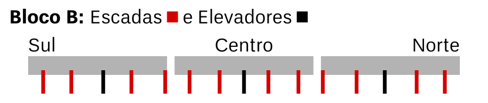

O térreo do bloco B é majoritariamente Anfiteatros, que podem ser usados para qualquer curso, principalmente nas seções sul e norte. No centro há salas destinadas a cursos de Exatas (Física e Matemática), além de Centros Acadêmicos (CAs) e o Decanato Central dos Estudantes (DCE). Intercalados entre os auditórios há escadas, elevadores, salas de aula e alguns banheiros acessíveis e com fraldários. Se puder e precisar, o banheiro mais próximo está provavelmente no 1º Andar.
- Escadas (em vermelho): 021, 066, 162, 216, 255, 303, 381, 429, 468, 522, 618, 663
- Elevadores e banheiros (em preto): 117, 342, 567
Lista de Salas
- 006 Sala de Aula
- Corredor
- 012/62 Sala de Aula
- 013/63 Sala de Aula
- 014/64 Sala de Professor - Instituto de Psicologia (IP)
- 016/63 Sala de Aula
- 016/62 Sala de Aula
- Escada
- 027/60 Sala de Aula
- 042 Anfiteatro 2
- 048 Sala de Aula
- 049 Anfiteatro 3
- Escada
- 072 Sala de Aula
- 096 Anfiteatro 4
- 102 Sala de Aula
- 103 Anfiteatro 5
- Elevador
- 120/61, 120/63 Banheiros com fraldários
- 138 Anfiteatro 6
- 143 Sala de Aula
- 145 Anfiteatro 7
- Escada
- 168 Sala de Aula
- 186 Anfiteatro 8
- 192 Sala de Aula
- 193 Anfiteatro 9
- Escada
- 222 Centro Acadêmico de Letras - CALET
- 240 Núcleo Sonoro (Coral da UnB) - DEA/DAC
- 241 Anfiteatro 10
- Escada
- 260 PET Física
- 270 Laboratório de Física Experimental 1A
- 273 Laboratório de Física Experimental 1B
- 287 Corredor
- 286/57, 286/58, 286/61, 286/64, 287/67, 288/67, 289/64, 289/61, 289/58, 289/57 Salas de Alunos de Pós-Graduação - Conjunto 1
- Secretaria de Graduação - IF
- 297 Direção - IF
- Secretaria de Pós-Graduação - IF
- Escada
- 308 Auditório do IF
- 317 Corredor
- 315/57, 315/58, 315/61, 315/64, 316/67, 317/67, 318/64, 318/61, 318/58, 318/57 Salas de Alunos de Pós-Graduação - Conjunto 2
- 330 Laboratório de Física Experimental 2A
- 333 Laboratório de Física Experimental 2B
- Elevador
- 343/60, 348/60 Banheiros com fraldários
- 360, 366, 370 Centro Acadêmico de Física - CAFIS
- 366/60 Laboratório de Física Experimental 3
- 370/60 Laboratório de Física Experimental 4
- Sala de Professores substitutos do Departamento de Matemática - MAT
- 380 Centro Acadêmico de Sociologia - CASO
- Escada
- 382 Laboratório de Informática - LABIE - IE
- 395 Anexo do Departamento de Matemática - MAT
- 395 Anexo do Departamento de Matemática - MAT
- Sala de Atendimento do Instituto de Ciências Exatas - IE
- 417 Laboratório Didático de Ensino de Física - LADEF
- 420 Experimentoteca A Física Para Todos
- Escada
- 311 Centro Acadêmico de Serviços Sociais - CASESO
- 450 Anfiteatro 11
- Decanato Central dos Estudantes - DCE
- Escada
- 470 Centro Acadêmico de Computação - CACOMP
- 498 Anfiteatro 12
- 504 Sala de Aula
- 505 Anfiteatro 13
- Escada
- 524 Sala de Aula
- 546 Anfiteatro 14
- 552 Sala de Aula
- 553 Anfiteatro 15
- Elevador
- Banheiros Acessíveis
- 588 Anfiteatro 16
- 594 Sala de Aula
- 595 Anfiteatro 17
- Escada
- 620 Sala de Aula
- 642 Anfiteatro 18
- 648 Sala de Aula
- 649 Anfiteatro 19
- Escada
- Centro Acadêmico de Geografia - CAGEA
- Corredor
- Programa de Apoio às Pessoas com Necessidades Especiais - PPNE - DAC
- 679/62 Sindicato Nacional dos Técnicos de Nível Superior - ATENS UnB
- 685 Sala de Aula
- Reprografia